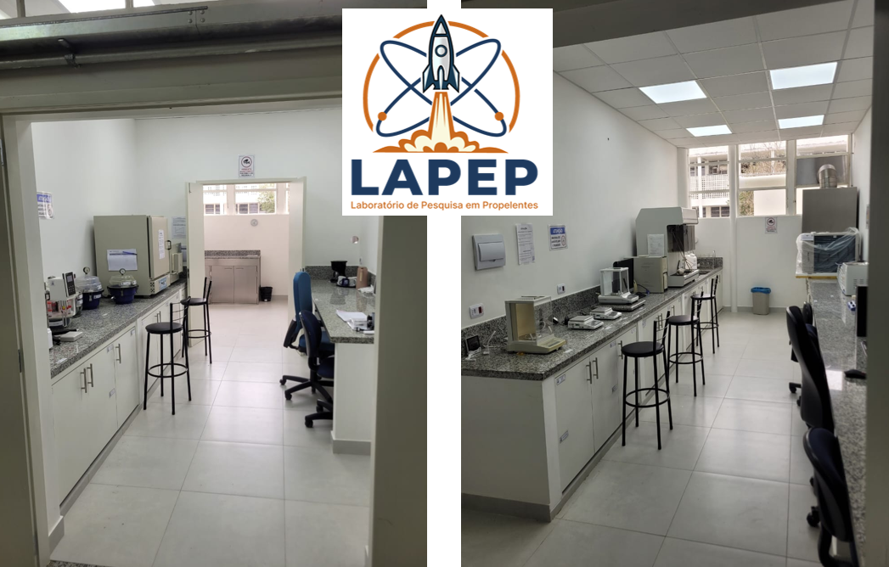

Laboratório de Pesquisas em Propelentes Instituto Tecnológico de Aeronáutica
O LAPEP (Laboratório de Pesquisas em Propelentes) é um laboratório do Instituto Tecnológico de Aeronáutica (ITA) dedicado ao desenvolvimento de tecnologias para propulsão química e materiais avançados voltados aos setores aeroespacial, energético e de defesa. Suas linhas de pesquisa abrangem propelentes líquidos, sólidos, híbridos e em gel, além de propelentes verdes à base de HTP, N₂O e ADN. O laboratório também atua no desenvolvimento de catalisadores e suportes catalíticos para sistemas propulsivos, bem como de materiais cerâmicos e carbonosos avançados. Outras áreas de atuação incluem materiais eletromagnéticos para aplicações em radar e comunicações estratégicas, materiais funcionais para baixa observabilidade e gerenciamento de assinaturas, manufatura aditiva de componentes funcionais e nanocatalisadores para aplicações energéticas e ambientais. O LAPEP realiza atividades de síntese, caracterização e avaliação de desempenho de materiais e sistemas, contribuindo para o avanço científico e tecnológico de áreas estratégicas para o Brasil. Suas pesquisas têm como foco a autonomia tecnológica, a inovação e o fortalecimento da capacidade nacional.

Pesquisa aplicada em propulsão química, catálise e materiais avançados
HTP, ADN e N₂O como propelentes para sistemas de decomposição catalítica em micropropulsores e satélites.
Pares oxidante-combustível baseados em HTP como oxidante para sistemas bipropelentes de baixa toxicidade.
Combustíveis compósitos e gelificados para sistemas híbridos de propulsão com elevada densidade energética.
Espinélios de metais de transição e catalisadores heterogêneos, com suportes à base de hexaaluminatos e aluminas estruturadas.
Produção de monólitos e componentes catalíticos funcionais por impressão 3D para aplicações em propulsão.
Catalisadores de metais de transição e óxidos mistos para geração de hidrogênio verde e degradação fotocatalítica de poluentes.
Materiais carbonosos nanoestruturados obtidos por pirólise controlada para eletrocatálise, absorvedores de radiação eletromagnética, refratários industriais e aeroespaciais, e sistemas de defesa.
Síntese e caracterização de cerâmicas avançadas para aplicações aeroespaciais e de defesa, suportes catalíticos de alta estabilidade térmica e monólitos estruturados para sistemas propulsivos.
Simulação termodinâmica de sistemas propulsivos químicos para avaliação de desempenho e dimensionamento de câmaras de combustão.
Planejamento experimental e otimização multivariada por superfície de resposta, aplicados transversalmente a todos os projetos.
Conheça os pesquisadores e orientandos do LAPEP-ITA
Projetos de pesquisa e desenvolvimento em andamento e concluídos
P&D e desenvolvimento tecnológico com parceria internacional (TII). HTP como propelente para satélites e micropropulsores, com interesse estratégico para a defesa nacional.
Síntese e caracterização de catalisadores para decomposição de HTP em sistemas propulsivos de satélites.
Protocolo de produção e qualificação de HTP propulsivo em colaboração com o LTF-ITA.
Síntese e caracterização de nanopartículas catalíticas para aplicação em decomposição de propelentes. (Mestrado, 2026)
Produção de suporte de alumina a partir de precursores para catálise em sistemas propulsivos. (Mestrado, 2026)
Desenvolvimento de catalisadores para geração de hidrogênio verde em aplicações aeroespaciais. (Mestrado, 2026)
Impressão 3D de monólitos cerâmicos como suportes catalíticos para propulsores a HTP. (Mestrado, 2025)
Desenvolvimento e caracterização de propulsor monopropelente operado com HTP, com aplicações em defesa e sistemas aeroespaciais. (Mestrado, 2024)
Desenvolvimento e avaliação de combustível hipergólico verde compatível com HTP. (Mestrado, 2024)
Desenvolvimento de método analítico miniaturizado para monitoramento de resíduos em sementes. (Doutorado, 2025)
Desenvolvimento e avaliação de catalisadores heterogêneos para decomposição de monopropelentes verdes à base de HTP e ADN. (Mestrado)
Síntese e avaliação de nanopartículas catalíticas à base de espinélios para propulsão monopropelente. (IC, 2026)
Avaliação de oxidantes alternativos de baixa toxicidade para aplicações em propulsão bipropelente. (IC, 2026)
Planejamento experimental para otimização de catalisadores de prata para decomposição catalítica de peróxido de hidrogênio. (IC, 2026)
Síntese e avaliação de óxidos mistos nanoestruturados como fotocatalisadores para tratamento de efluentes. (IC, 2026)
Desenvolvimento de suportes carbonosos nanoestruturados para aplicação em eletrocatálise e energia. (IC, 2026)
Síntese de materiais carbonosos via pirólise controlada para aplicações refratárias em ambientes industriais e aeroespaciais. (IC, 2026)
Desenvolvimento de materiais carbonosos com elevada área superficial via pirólise para aplicações energéticas e catalíticas. (IC, 2026)
Desenvolvimento e otimização por DOE de catalisadores à base de óxidos mistos para fotocatálise ambiental. (IC, 2026)
Avaliação de suporte de alta estabilidade térmica para propulsão monopropelente a HTP. (Mestrado, 2025)
Caracterização e otimização de par hipergólico com HTP como oxidante. (Mestrado, 2024)
Síntese e caracterização de combustível gelificado à base de querosene. (IC, 2025)
Desenvolvimento de combustível gelificado à base de etanol para sistemas hipergólicos. (IC, 2025)
Planejamento experimental aplicado à otimização de formulações bipropelentes verdes. (IC, 2025)
Desenvolvimento de ferramenta computacional para planejamento e análise estatística de experimentos. (IC, 2025)
Síntese e avaliação de desempenho de combustíveis gelificados para propulsão bipropelente. (IC, 2024)
Avaliação de novo par hipergólico verde para sistemas bipropelentes. (IC, 2023)
Desenvolvimento e otimização geométrica de reator catalítico para decomposição de HTP. (IC, 2023)
Síntese e avaliação de suporte cerâmico de alta temperatura para propulsão monopropelente. (IC, 2023)
Desenvolvimento de combustíveis com aditivos catalíticos para ignição hipergólica com HTP. (IC, 2022)
Síntese e caracterização de catalisadores preparados por modelagem de misturas para decomposição de HTP. (IC, 2021)
Síntese e avaliação de catalisadores espinélios de metais de transição para propulsão monopropelente. (IC, 2020)
Desenvolvimento inicial de catalisadores espinélios Co-Mn para propulsão monopropelente. (IC, 2017)
12 artigos em periódicos internacionais
Dissertações, teses e supervisões concluídas pelo LAPEP-ITA
Desenvolvimento de Hexaaluminato de Lantânio para Emprego como Suporte Catalítico em Sistemas Propulsivos Monopropelentes
Geovanna Karolinne Carvalho Santos — ITA / CAPES — Orientador
Characterization and Optimization of a Novel Hypergolic Propellant Using Monoethanolamine, n-Butanol and 90% Hydrogen Peroxide
Paull Cristhiann Acosta Mendoza — ITA / CAPES — Co-orientador
Supervisão de Pós-Doutorado em Catálise e Propulsão
Renata Fraga Cardoso — Instituto Tecnológico de Aeronáutica (2025–2026)
Colaborações institucionais nacionais e internacionais
Acesso ao sistema interno do LAPEP
Novidades, conquistas, eventos e vagas do laboratório
Entre em contato com o LAPEP-ITA
Departamento de Química — ITA
Campus do CTA, São José dos Campos, SP
CEP 12228-900
(12) 3947-5948